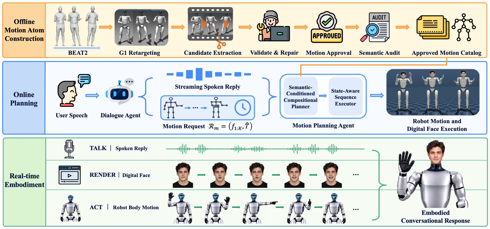
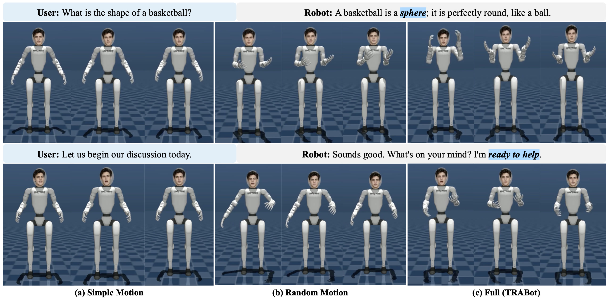

Talk, Render, Act
Integrating Social Gesture and Digital Face with Synchronized Speech for Conversational Humanoid Robot
- Talk
- Streaming speech
- Render
- Audio-driven digital face
- Act
- Semantically planned gesture
Overall demo video
Physical-robot experiment first, then the simulation dialogues with every condition we compare.
Method
One offline agent builds the motion vocabulary; three online agents turn each spoken reply into speech, a face, and gesture.

Qualitative results
The highlighted words are what the gesture should correspond to. Play the same turns as video in the section below.

Twelve dialogues, five conditions
The same reply audio, replayed under each condition from the user study. All five clips play in sync; the score underneath is the timing the full system actually logged for that reply.
User
Robot
Time is measured from the first sample of reply audio. Hatched segments are minimum-jerk bridges from the measured pose into each atom; the outlined block is the return to neutral.
What the numbers say
Twenty participants ranked the five conditions on each of the twelve turns, then picked the one they preferred overall.
of participant-turn decisions preferred the full system 203 / 240. Random composition from the same catalog, with the same amount of motion, was chosen 13.75% of the time.
| Condition | Naturalness | Expressiveness | Coherence | Gesture–speech | Preferred |
|---|
End-to-end timing
- Speech–body overlap
- 84.72%
- Turns completed without failure
- 100%
- Face offset from reply audio
- 37.5 ms
- Body offset from reply audio
- −666.6 ms
Averages over the 12 turns. The negative body offset means the first gesture begins before the first audio sample, as a human preparation phase does.
Beat alignment
| Method | Binary BAS ↑ | Gaussian BAS ↑ |
|---|---|---|
| Simple Motion | 0.297 ± 0.206 | 0.210 ± 0.129 |
| Random Motion | 0.281 ± 0.197 | 0.190 ± 0.145 |
| TRABot | 0.308 ± 0.141 | 0.225 ± 0.130 |
Gesture apexes against emphasised speech intervals, 12 utterances per condition, σ = 0.30 s for the Gaussian variant.
Planner, on 200 fixed replies
| Method | Atoms per reply ↑ | Unused budget ↓ |
|---|---|---|
| Random Match | 1.451 | 2.376 s |
| TRABot | 1.705 | 0.993 s |
Same catalog and budget for both. The planner fits 17.5% more atoms into a reply and leaves 58.2% less of the budget unused.
Cite
@article{jiang2026trabot,
title = {Talk, Render, Act: Integrating Social Gesture and Digital Face
with Synchronized Speech for Conversational Humanoid Robot},
author = {Jiang, Jin and Li, Kun and Ma, Jiancong and Liao, Shengcai},
journal = {arXiv preprint arXiv:2610.06153},
year = {2026}
}